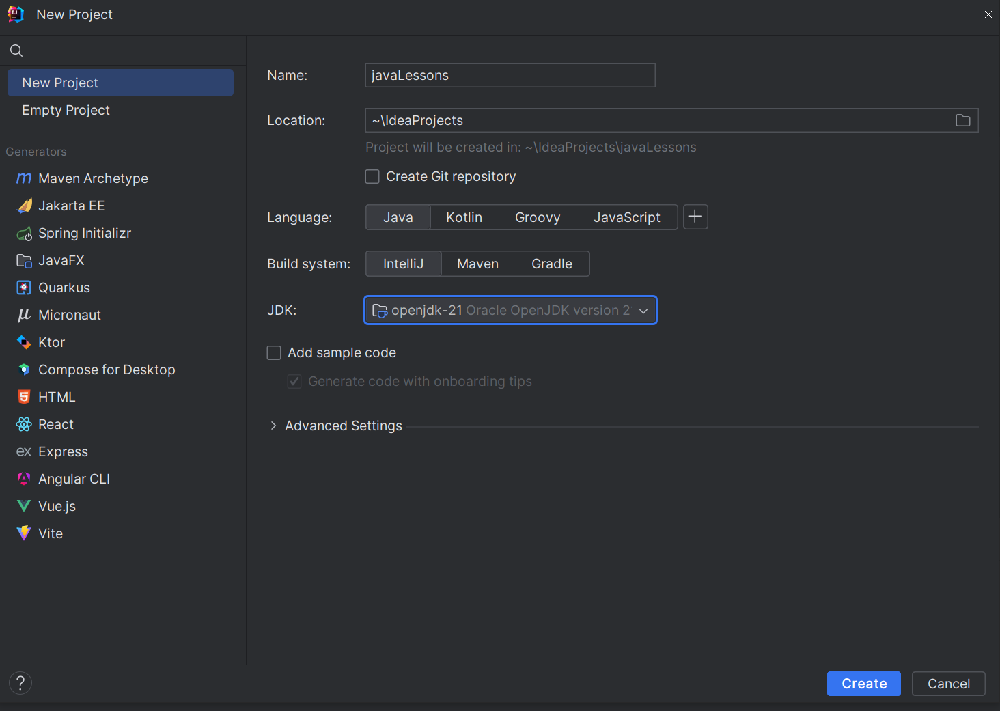
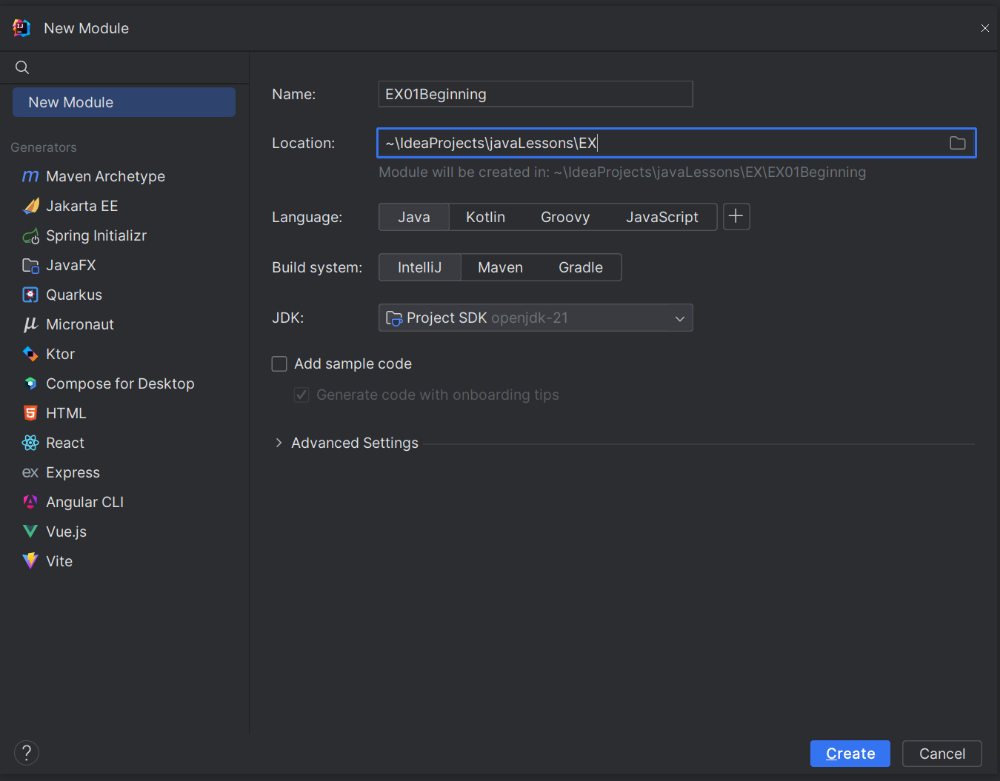

Для всех последующих заданий нужно будет создать отдельную директорию (проект) javaLessons под корневой папкой IdeaProjects.
Для любого следующего задания потребуется создать модуль под директорией EX (все задания будут под этой папкой). Пример:
И в папке src (source root) создать соответствующие пакеты. Больше про модули и пакеты можно почитать:
Пакеты в JavaВ модуле (module) EX01Beginning
В пакете (package) com.java.lessons.hello
Создайте класс Hello
В этом классе функция main.
Вам нужно написать программу на Java. Ваша программа должна:
1. Спросить у пользователя его имя: "Как вас зовут? "
2. Вывести имя и затем запросить два числа:
3. "Привет, [имя]! Введите случайное число: "
4. "Отлично! Теперь введите второе случайное число: "
5. Вывести сумму этих чисел в формате "[число 1] + [число 2] равно [ответ]"
Пример:
Как вас зовут? Мари
Привет, Мари! Введите случайное число: 2
Отлично! Теперь введите второе случайное число: 4
2 + 4 равно 6
Как писать и сохранять в терминале Java User Input
Как сделать функцию main psvm
В модуле (module) EX01Beginning
В пакете (package) com.java.lessons..operators
Создайте класс Operators
В этом классе функция main.
Напишите программу на Java, которая запрашивает у пользователя два числа, а затем выполняет следующие операции с этими числами:
Сложение: Сложите введенные числа и выведите результат.
Вычитание: Вычтите второе число из первого и выведите результат.
Умножение: Умножьте введенные числа и выведите результат.
Деление: Разделите первое число на второе и выведите результат.
Остаток от деления: Найдите остаток от деления первого числа на второе и выведите результат.
Целая часть от деления: Найдите целую часть от деления первого числа на второе и выведите результат.
Возведение в степень: Возведите первое число в степень, заданную вторым числом, и выведите результат.
Проверка больше или равно: Проверьте, является ли первое число больше или равно второму числу, и выведите результат в виде True или False.
Проверка меньше или равно: Проверьте, является ли первое число меньше или равно второму числу, и выведите результат в виде True или False.
Проверка равенства: Проверьте, равны ли два числа, и выведите результат в виде True или False. (если равны, то правда)
Проверка неравенства: Проверьте, не равны ли два числа, и выведите результат в виде True или False. (если не равны, то правда)
Вычисление объема параллелепипеда: Используя введенные числа как значения высоты, ширины и глубины, вычислите объем параллелепипеда и выведите результат.
Преобразование времени в минуты: Используя введенные числа как значения для дней, часов, минут и секунд (первое число - дни, второе число - часы), преобразуйте время в минуты и выведите результат.
После ввода двух чисел программа должна выполнять все перечисленные операции с этими числами.
Про типы данных Java User Input
Приведение типов Java (casting) Java Type Casting | Java Type Casting Video
Операторы Java Operators
В модуле (module) EX01Beginning
В пакете (package) com.java.lessons.math
Создайте класс MathCalculator
В этом классе следует реализовать несколько функций, названия отмечены так.
Функции следует создавать статичными, чтобы обращаться к ним через класс.
findAverage: Принимает на вход четыре целых числа (a, b, c и d), затем умножает a на 1, b на 2, c на 3 и d на 4. После этого вычисляет среднее арифметическое полученных произведений и возвращает результат.
sumOfFractions: Принимает на вход четыре целых числа (x, y, u и t), которые представляют две дроби: x/y и u/t. Затем вычисляет сумму этих дробей и возвращает результат в виде строки. Ответ не должен быть сокращенной дробью и должен быть представлен в виде "числитель/знаменатель".
Пример 1:
Input
x = 1
y = 3
u = 1
t = 3
Output
2/3 or 6/9 or 4/6
Пример 2:
Input
x = 2
y = 5
u = 1
t = 5
Output
3/5
hoursPerWeek: Принимает на вход два целых числа (weeks и ects), где weeks - количество недель, ects - количество EAP (European Credit Transfer and Accumulation System). Затем вычисляет, сколько часов в неделю должен тратить студент, чтобы выполнить необходимое количество EAP, если 1 EAP это 26 часов. Если это невозможно, возвращает -1. Например, если необходимо выполнить 1 EAP за 2 недели, студент должен уделять 13 часов в неделю. Если бы вам пришлось работать 170 часов в неделю, это было бы невозможно, потому что в неделе всего 168 часов.
Например, если необходимо выполнить 1 EAP за 2 недели, студент должен уделять 13 часов в неделю. Если бы вам пришлось работать 170 часов в неделю, это было бы невозможно, потому что в неделе всего 168 часов.
После этого следует создать функцию main, где написать несколько примеров работы функций, чтобы показать на защите.
Все про методы Java methods
В модуле (module) EX01Beginning
В пакете (package) com.java.lessons.atm
Создайте класс AtmCalculator
В этом классе следует реализовать функцию banknotify(int amount), как и в прошлом задании - статичную.
Требуется создать банкомат для выдачи наличных, с помощью которого можно получить определенные банкноты. На вход подается сумма от 1 до 500, после чего программа печатает, сколько различных банкнот нужно, чтобы покрыть введенную сумму. Цель - минимизировать количество банкнот. В банкомате имеются следующие номиналы: 1 евро, 5 евро, 10 евро, 20 евро, 50 евро, 100 евро.
Пример: сумма в размере 56 евро. Для возврата этой суммы необходимы три банкноты: 50 евро, 5 евро, 1 евро. То есть следует вернуть число 3 (банкноты).
После этого следует создать функцию main, где написать несколько примеров работы функций, чтобы показать на защите.
if-else оператор Java if-else